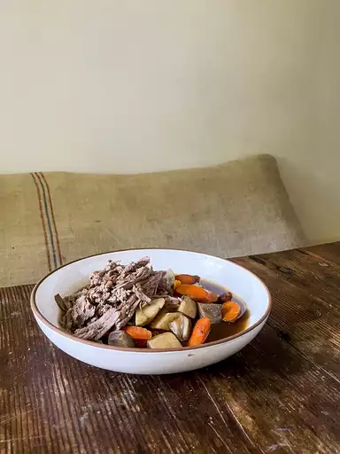

Pot Roast

Description
This slow cooker pot roast is tender, juicy, and flavorful.
Plus, it’s the perfect low-maintenance meal for cozy nights at home!
Ingredients:
- Chuck roast
- Seasonings
- Olive oil
- Soup mix
- Water
- Vegetables
Steps:
- Season and sear the chuck roast.
- Place the ingredients in the slow cooker.
- Cook on Low for 8 to 10 hours.